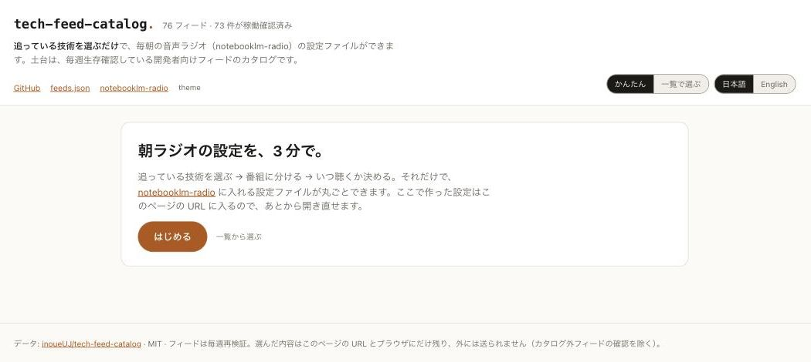
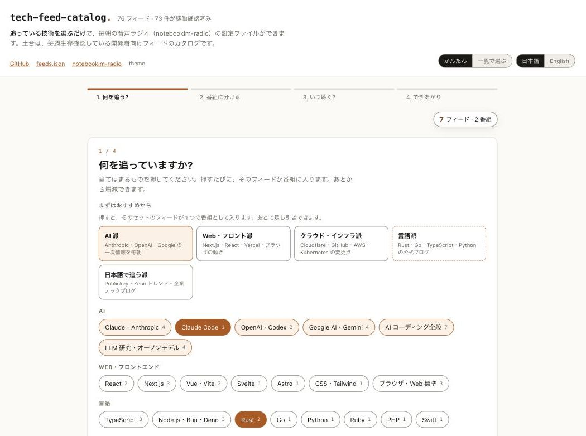
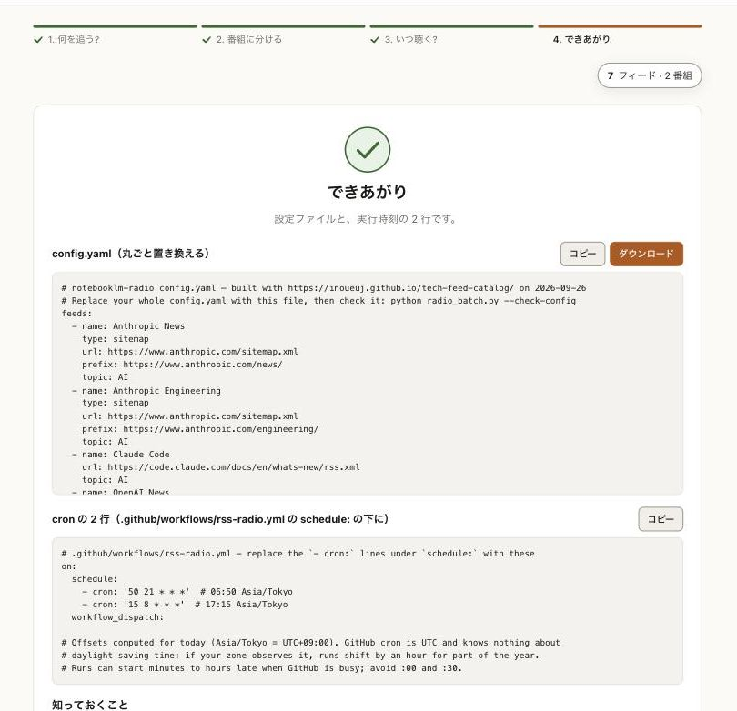
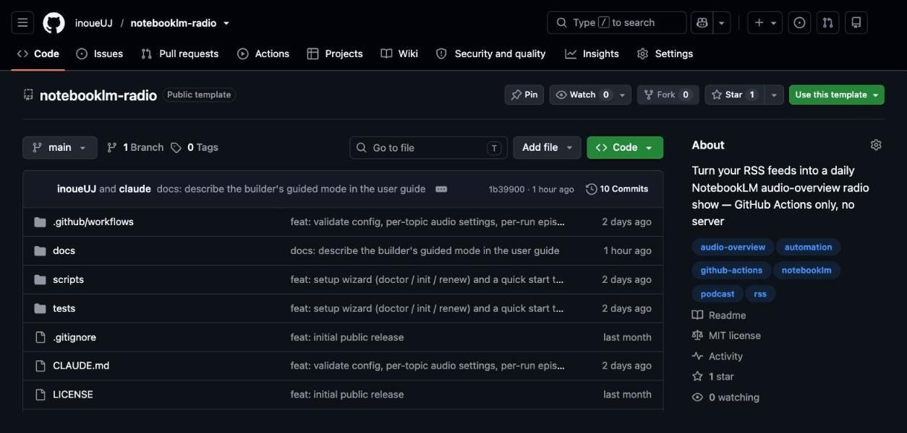
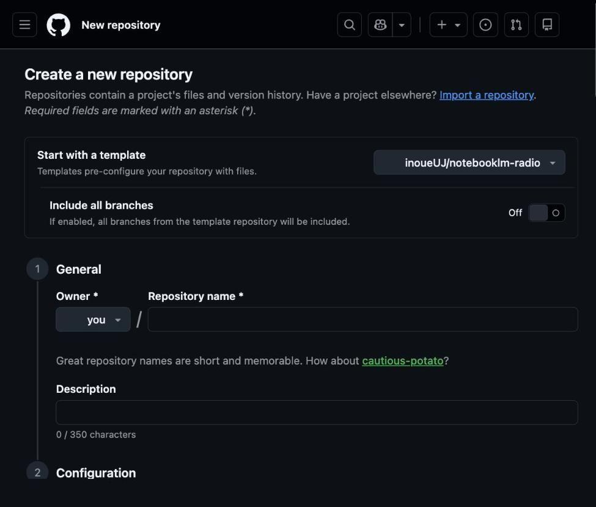
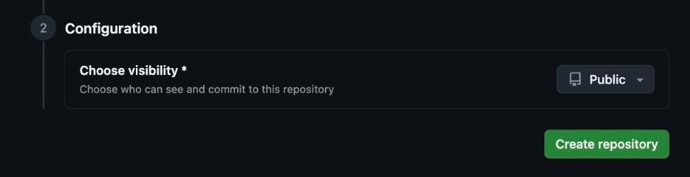
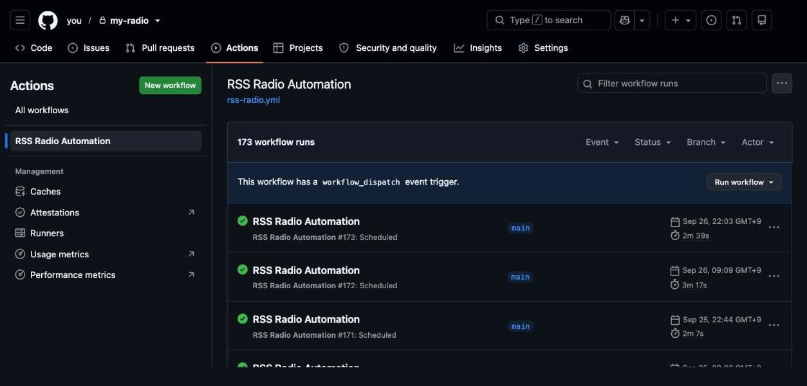
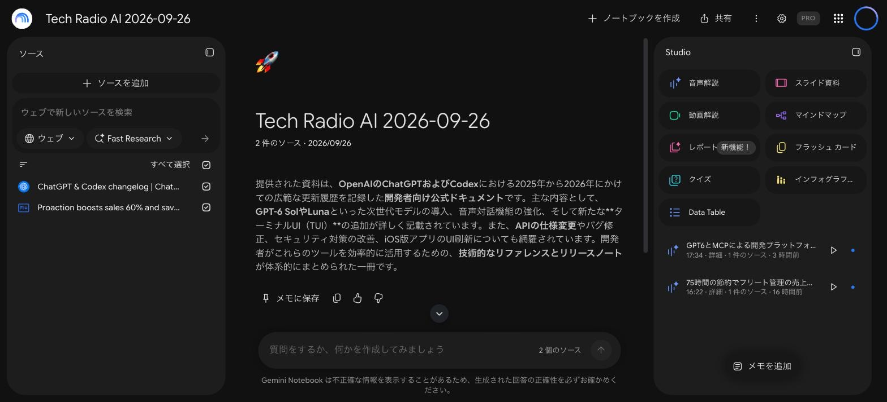
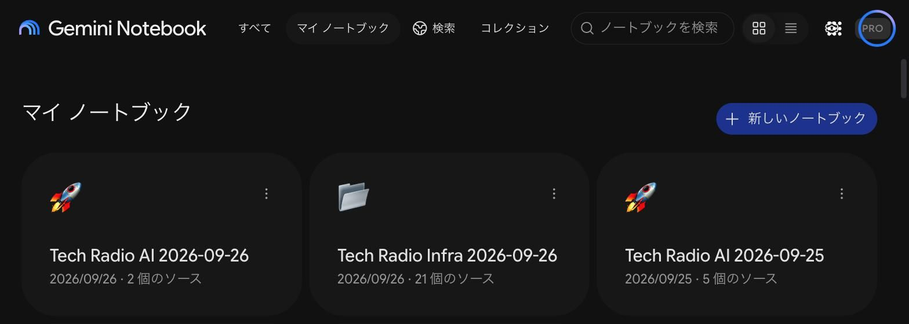

はじめにBefore you start
追っている技術の新着記事を、毎朝 NotebookLM の音声ラジオにして届ける仕組みを、自分の GitHub に作ります。作業は約 20 分。最初の音声ができるまでさらに 20 分ほどです。
You'll set up, in your own GitHub account, a job that turns new articles from the feeds you follow into a NotebookLM audio show every morning. About 20 minutes of work, then another 20 while the first episode renders.
PC には Python 3.10 以上、uv、GitHub CLI(入れたら一度 gh auth login)が要りますが、足りなければステップ 4 のウィザードが教えてくれます。
Your PC needs Python 3.10 or newer, uv and the GitHub CLI (run gh auth login once). If something's missing, the wizard in step 4 will tell you.
設定を作るBuild the config
設定ファイルは config.yaml の 1 枚だけ。ビルダーで 3 分で作れます。ブラウザだけで完結します(外に問い合わせるのは、カタログ外フィードの「確認」だけ)。
The whole configuration is one file, config.yaml. The builder makes it in three minutes, entirely in your browser (only "Check" on a feed outside the catalog contacts the checker).

1
234- 何を追う? — おすすめセットかチップを押す。カタログに無いもの(Zenn のトピック、Qiita のタグ、任意の URL)は同じ画面の下から。「確認」で本当にフィードかを見に行く。
- 番組に分ける — 番組 = NotebookLM のノートブック 1 冊 = 1 日 1 本のラジオ。混ぜて違和感がある話題は分ける。名前は自由、雰囲気は「じっくり / 手短に」。
- いつ聴く? — 朝の時刻、2 回目の有無、NotebookLM のプラン。「番組数 × 実行回数 = 1 日の本数」が上限を超えると赤くなる。
- できあがり —
config.yamlをダウンロードし、cron の 2 行をコピーしておく。
- What do you follow? — tap a starter pack or technology chips. Anything not in the catalog (a Zenn topic, a Qiita tag, any URL) goes in at the bottom of the same step; "Check" fetches it once.
- Group into shows — a show = one NotebookLM notebook = one episode a day. Keep unrelated topics apart. Rename freely; pick "In depth" or "Brief".
- When do you listen? — morning time, optional second run, your NotebookLM plan. "Shows × runs = episodes per day" turns red when it exceeds the cap.
- Done — download
config.yamland copy the two cron lines.

56GitHub に自分のコピーを作るCreate your own copy on GitHub
notebooklm-radio はテンプレートリポジトリです。「Use this template」で、あなたのアカウントの下に同じ中身の新しいリポジトリができます。fork ではなく、作者との繋がりの無い完全に自分のものです。
notebooklm-radio is a template repository. "Use this template" creates a new repository with the same contents under your account: not a fork, fully yours.

1
23
4state.json)をあなたのリポジトリにコミットし続けます。購読の履歴なので、公開しない方がよいものです。state.json), which is your reading history, into your repository.設定をコピーに入れるPut the config into your copy
リポジトリを PC に clone し、ステップ 1 のファイルで置き換えて push します。まだ何も動きません(ログイン情報が無いので、動いても止まります)。
Clone the repository, replace the file from step 1, push. Nothing runs yet (without the login it would stop immediately).
$ gh repo clone you/my-radio $ cd my-radio # 1. ダウンロードした config.yaml で丸ごと置き換える（feeds: の下に貼るのではない） $ cp ~/Downloads/config.yaml ./config.yaml # 2. .github/workflows/rss-radio.yml の "- cron:" 2 行を、ビルダー「できあがり」の cron 2 行に差し替える # 3. 検査（何も実行しない。設定ファイルを読んで問題を列挙するだけ） $ python radio_batch.py --check-config config.yaml OK: 8 feed(s), topics: AI, インフラ, 言語 $ git add -A && git commit -m "my feeds" && git push
- 直すのは 2 か所だけ: config.yaml を丸ごと置き換える(ダウンロードしたファイルで上書き。
feeds:の下に貼るのではない)と、.github/workflows/rss-radio.ymlの- cron:2 行をビルダーの 2 行に差し替える。 - 検査が
NGと言ったら、列挙された箇所を直します。知らないキーはわざとエラーにしています(typo が黙って既定値に落ちるのが一番怖いため)。 - 手元に
yamlなどのパッケージが無くて検査が動かない場合は、pip install -r requirements.txtで入ります。CI でも毎回同じ検査が走るので、飛ばしても壊れたまま動くことはありません。 - ファイルを GitHub の画面で直接編集しても構いません。clone するのはウィザードのためです。
- Only two edits: replace config.yaml as a whole (overwrite it with the downloaded file; don't paste under
feeds:) and swap the two- cron:lines in.github/workflows/rss-radio.ymlfor the builder's. - If the check says
NG, fix the listed items. Unknown keys are errors on purpose (a typo silently falling back to a default is the worst failure). - If the check can't run for lack of packages,
pip install -r requirements.txtfixes that; CI runs the same check before every batch anyway. - Editing the files in GitHub's web UI works too; the clone is for the wizard.
ウィザードを一度だけ走らせるRun the wizard, once
NotebookLM に入るには、あなたの Google ログインが要ります。ブラウザでしか取れないので、PC で 1 回だけログインし、その結果をリポジトリの secret(GitHub Actions だけが読める秘密の置き場)に渡します。それを全部やるのが setup.py です。
NotebookLM needs your Google login, which only a browser can produce. So you log in once on your PC and hand the result to your repository's secrets (values only GitHub Actions can read). setup.py does all of it.
$ python scripts/setup.py notebooklm-radio setup 1/6 Checking the machine ✓ Python 3.12.4 ✓ Repository you/my-radio ✓ Workflow pins notebooklm-py 0.8.0 ✓ uv uv 0.9.24 ✓ GitHub CLI installed and logged in ✗ notebooklm CLI not installed → uv tool install "notebooklm-py[browser]==0.8.0" (this wizard can do it) ✗ Login (ci profile) no credential file yet → notebooklm -p ci login (this wizard can do it) ✗ Secret NOTEBOOKLM_AUTH_JSON not set → the wizard sets it from the login above ! Secret NOTIFY_WEBHOOK_URL not set → without it you get no notifications, including errors ✓ config.yaml config.yaml OK: 8 feed(s), topics: AI, インフラ, 言語 2/6 notebooklm CLI Install the notebooklm CLI (notebooklm-py[browser]==0.8.0) with uv? [Y/n] y $ uv tool install --force "notebooklm-py[browser]==0.8.0" 3/6 Google login (CI profile) $ notebooklm -p ci login A browser window opens. Sign in with the Google account that has NotebookLM access. Use the "ci" profile only for CI; your everyday "default" profile stays separate, because every local notebooklm call rotates cookies and would shorten the CI copy's life. （ブラウザで普通にログインする。終わるとターミナルに戻る） 4/6 Repository secret NOTEBOOKLM_AUTH_JSON $ gh secret set NOTEBOOKLM_AUTH_JSON -R you/my-radio (from /Users/you/.notebooklm/profiles/ci/storage_state.json) Recorded NOTEBOOKLM_AUTH_UPDATED=2026-09-27 (repository variable). 5/6 Repository secret NOTIFY_WEBHOOK_URL Paste your Slack incoming-webhook or Discord webhook URL (input is hidden). Slack: api.slack.com/apps → your app → Incoming Webhooks → Add New Webhook to Workspace. Discord: channel settings → Integrations → Webhooks → New Webhook → Copy Webhook URL. Leave empty to skip (you will get no notifications, including error reports). Webhook URL: （貼り付けても表示されない） $ gh secret set NOTIFY_WEBHOOK_URL -R you/my-radio 6/6 First run Run the workflow now (creates today's notebook and starts the audio)? [Y/n] y $ gh workflow run rss-radio.yml -R you/my-radio Started. Watch it: gh run watch -R you/my-radio or https://github.com/you/my-radio/actions Done. What happens next: - Within a few minutes you get a webhook message with today's articles and a link to the notebook. - The audio takes ~20 minutes to render inside NotebookLM (the notification says "started", not "finished"). - Every ~3.5 weeks the Google session expires; when the error message arrives, run: python scripts/setup.py renew - Change feeds or style in config.yaml (or rebuild it at https://inoueuj.github.io/tech-feed-catalog/).
webhook URL の取り方Where the webhook URL comes from
- Slack: api.slack.com/apps → Create New App → From scratch → 左メニュー Incoming Webhooks → On → Add New Webhook to Workspace → チャンネルを選ぶ →
https://hooks.slack.com/services/…をコピー。 - Discord: 通知したいチャンネルの設定 → 連携サービス → ウェブフック → 新しいウェブフック → ウェブフック URL をコピー。
- Slack: api.slack.com/apps → Create New App → From scratch → Incoming Webhooks → On → Add New Webhook to Workspace → pick a channel → copy the
https://hooks.slack.com/services/…URL. - Discord: channel settings → Integrations → Webhooks → New Webhook → Copy Webhook URL.
ci プロファイルに保存されます。分けるのは、混ぜると認証の寿命が 3.5 週から 3 日に縮むためです。認証ファイルの中身は画面にもシェルの履歴にも出ません。Windows(PowerShell)でも同じ手順です。ci profile, separate from your everyday one; mixing them shortens the credential's life from 3.5 weeks to 3 days. The credential file's contents never appear on screen or in shell history. PowerShell works the same way.- 「workflows are disabled」のような失敗 → テンプレートから作った直後は Actions が無効なことがあります。リポジトリの Actions タブで有効化して、
gh workflow run rss-radio.ymlかウィザードをもう一度。 notebooklmが見つからない → 新しいターミナルを開く(インストール後に PATH が変わる)。python scripts/setup.py doctorはいつでも実行でき、何も変えません。
- "workflows are disabled" → a repo made from a template may have Actions off. Enable them in the Actions tab, then
gh workflow run rss-radio.ymlor the wizard again. notebooklmnot found → open a new terminal (the install changes PATH).python scripts/setup.py doctorruns the checks alone and changes nothing.
初回実行を確かめるCheck the first run
3 か所で確かめます。GitHub の Actions、通知、NotebookLM。初回は既読状態の初期化として各フィードの最新 1 件だけを処理し、過去分は読んだことにします(洪水は起きません)。
Three places to look: GitHub Actions, your notifications, NotebookLM. The first run initializes read-state: it processes only the newest article per feed and marks the backlog as read (no flood).

12届く通知(Slack の例)The notification (Slack shown)

34
5毎朝の見方Every morning
ここからは何もしなくても、予約した時刻に GitHub が動きます。
From here on GitHub runs at the times you set, with nothing to do on your side.
- 通知のリンクからノートブックを開き、NotebookLM アプリで聴く。アプリの通知を有効にしておくと、音声の完了が分かる。
- 新着が無い回は「😪 今回は新着なしだったよ。ラジオはおやすみ〜」が来る。何も来ないのは異常(ステップ 9)。
- 2 回目の実行では、その回に新しく入った記事だけで別の音声ができる。朝の記事は再放送されない。
- 見出しに「（音声は未生成）」と付いていたら、記事は入ったが音声を始められなかった。理由は別の通知に出る(多くは生成の上限)。アプリから手動で「音声解説」を作れる。
- 1 週間ほどで「🧹 [ドライラン] 7日より古いラジオ 2件が削除対象だよ（まだ消してない）」が来る。挙がったのが古いラジオだけなら、
config.yamlのcleanup.dry_runをfalseに。削除対象は「このバッチの命名に完全一致するノートブック」だけで、手で作ったものには触らない。
- Open the notebook from the notification link and listen in the NotebookLM app; turn on the app's notifications to hear when the audio is ready.
- A quiet run posts "😪 今回は新着なしだったよ。ラジオはおやすみ〜" (nothing new). Silence is abnormal (step 9).
- The second run of a day makes a separate episode from that run's new articles only.
- "（音声は未生成）" on a heading means the sources went in but the audio couldn't be started; a separate message says why (usually the cap). You can generate it by hand in the app.
- After about a week you'll see "🧹 [ドライラン] 7日より古いラジオ 2件が削除対象だよ（まだ消してない）", listing the notebooks it would delete. If they are only old episodes, set
cleanup.dry_run: falseinconfig.yaml. Only notebooks matching this batch's naming are ever deleted.
設定を変えるChanging things
すべて config.yaml です。変えて push すれば次の実行から反映されます(push しても即実行はされません)。迷ったらビルダーで作り直して丸ごと置き換えるのが確実です。
Everything is in config.yaml. Push a change and the next run picks it up (a push doesn't trigger a run). When in doubt, rebuild on the builder and replace the whole file.
| やりたいこと | Want to | どこを変えるか | Change |
|---|---|---|---|
| フィードを足す・外す | Add or remove a feed | feeds: の項目。ビルダーの共有リンクから作り直すと楽 | The feeds: list; the builder's share link makes rebuilding easy |
| フィードを別の番組へ | Move a feed to another show | そのフィードの topic: | Its topic: |
| 番組の形式・長さ・指示文 | A show's format, length, instructions | topics: → その番組 → audio: | topics: → that show → audio: |
| 実行時刻 | Run times | .github/workflows/rss-radio.yml の - cron: 2 行(UTC)。ビルダーの「できあがり」が UTC に変換した 2 行を出す | The two - cron: lines in .github/workflows/rss-radio.yml (UTC); the builder's Done step gives them already converted |
| 1 回に処理する記事数 | Articles per run | settings.limits.per_feed(既定 3)と total(既定 15)。超えた分は次回へ | settings.limits.per_feed (3) and total (15); overflow carries over |
| 流量の多いフィード | A firehose feed | そのフィードに mode: latest(最新 N 件だけ拾い、残りは読んだことにする) | mode: latest on that feed (newest N per run, the rest marked read) |
| 音声の言語 | Audio language | settings.language | |
| 記事ページがボット対策で取れないサイト | A host that blocks fetchers | そのフィードに source_mode: text | source_mode: text on that feed |
変えたあとは python radio_batch.py --check-config で検査できます。使えるキーは config.schema.json に全部書いてあります。
Validate with python radio_batch.py --check-config. Every accepted key is in config.schema.json.
約 3.5 週ごと: ログインを更新するAbout every 3.5 weeks: renew the login
手元の Google セッションは生き続けますが、secret に凍結したコピーは約 3.5 週で切れます。コードでは直せません。切れると、原因と手順つきのエラー通知が届きます。
Your local Google session keeps itself alive; the frozen copy in the secret does not, and dies after about 3.5 weeks. No code can fix that. When it happens, an error message arrives with the cause and the fix.
NotebookLM command failed.
Command: notebooklm list --json
Exit code: 2
UNEXPECTED_ERROR: Unexpected error: Authentication expired or invalid. Run 'notebooklm login' to re-authenticate.
認証切れ。CI 専用プロファイルで `notebooklm -p ci login` をやり直し、`gh secret set NOTEBOOKLM_AUTH_JSON < ~/.notebooklm/profiles/ci/storage_state.json` でシークレットを更新すること。環境変数モードは書き戻し先が無く自動更新されないため、放置しても直らない。…
実行ログ: GitHub Actions Run$ python scripts/setup.py renew notebooklm-radio credential renewal 1/3 Google login (CI profile) $ notebooklm -p ci login A browser window opens. Sign in with the Google account that has NotebookLM access. （ブラウザが開く。ログインし直す） 2/3 Repository secret NOTEBOOKLM_AUTH_JSON $ gh secret set NOTEBOOKLM_AUTH_JSON -R you/my-radio (from /Users/you/.notebooklm/profiles/ci/storage_state.json) Recorded NOTEBOOKLM_AUTH_UPDATED=2026-10-21 (repository variable). 3/3 Re-run Run the workflow now (creates today's notebook and starts the audio)? [Y/n] y $ gh workflow run rss-radio.yml -R you/my-radio Started. Watch it: gh run watch -R you/my-radio or https://github.com/you/my-radio/actions
- 2 分ほどで終わります。
python scripts/setup.py doctorでログインの古さがいつでも見られ、21 日を超えると先に警告します。 - 普段
notebooklmを手元で使うときは-p ciを付けないでください。CI 用と混ぜると寿命が 3 日に縮みます。 state.jsonは bot のものです。手で編集もコミットもしないでください。
- About two minutes.
python scripts/setup.py doctorshows the credential's age any time and warns past 21 days. - Don't use
-p cifor everyday localnotebooklmuse; mixing profiles shortens the life to 3 days. state.jsonbelongs to the bot. Never edit or commit it by hand.
困ったときWhen something looks wrong
| 見えたもの | You see | 意味 | Meaning | やること | Do |
|---|---|---|---|---|---|
| 何も届かない日が続く | Nothing for days | 通知の仕組みごと止まっている | The notification path itself is down | Actions タブで最後の実行を見る。NOTIFY_WEBHOOK_URL が入っているか doctor で確認 | Check the last run in the Actions tab; check NOTIFY_WEBHOOK_URL with doctor |
| 🚨 テスト/lint が失敗した… | テスト・lint・config.yaml の検査で止まった。ラジオは作られない | Tests, lint or the config check failed; no episode | リンク先の実行ログを見る。config.yaml の誤りなら config.yaml NG と原因が出ている | Open the linked run; a bad config.yaml shows config.yaml NG and why | |
| 実行エラー + Authentication expired | 認証切れ | Credential expired | python scripts/setup.py renew | ||
| （音声は未生成）+ rate_limited | 音声生成の上限に当たった | Audio generation cap | 番組を減らす、2 回目を切る、プランを上げる。記事は入っているので手動生成もできる | Fewer shows, drop the second run, or a bigger plan; generate by hand if you like | |
| ⚠️ RSSフィードの取得に問題があるよ ・X: HTTP 403 | そのフィードが取れない | That feed can't be fetched | 一時的なら放置。続くなら URL を見直す。403 が続くならボット拒否 | Transient: ignore. Persistent 403: the host refuses bots | |
| ⚠️ 以下はサイトのボット対策で本文を取り込めなかったから… | 記事ページがボット対策ページだった | Article pages were challenge pages | そのフィードに source_mode: text | Add source_mode: text to that feed | |
| 同じ記事が 2 つ入る | The same article twice | 2 つのフィードが同じ記事を別 URL で配信している(同一 URL なら自動で 1 つにまとまる) | Two feeds carry the same article under different URLs (identical URLs are merged automatically) | 片方を外す。ビルダーは選んだ時点で警告する | Drop one; the builder warns about this |
| 古い記事ばかり流れる | Only old articles | 流量が上限を超えていて古い順に消化している | Volume exceeds the limit; backlog drains oldest-first | mode: latest、または limits.per_feed を上げる | mode: latest, or raise limits.per_feed |
| 夕方の回が翌日のノートブックに入った | The evening episode landed in tomorrow's notebook | GitHub の実行が数時間遅れて日付をまたいだ | GitHub started the run hours late | cron を早める。:00 と :30 は特に混む | Move the cron earlier; avoid :00 and :30 |
用語Terms
- フィード
- Feed
- サイトが配っている「新着一覧」。RSS / Atom が普通の形式で、無いサイトは sitemap.xml で代用する。
- A site's machine-readable "what's new" list. RSS/Atom normally; sitemap.xml for sites without one.
- config.yaml
- 設定ファイル。フィード、番組、音声の設定、掃除の設定がすべて入っている。
- The one configuration file: feeds, shows, audio settings, cleanup.
- state.json
- 「どこまで読んだか」の記録。bot が毎回コミットする。
- The record of what has been read. Committed by the bot every run.
- 番組 / トピック / ノートブック
- Show / topic / notebook
- フィードのまとまり。1 日 × 1 番組で NotebookLM に 1 冊でき、1 冊につき実行ごとに 1 本の音声ができる。
- A group of feeds. One notebook per day per show; one audio per run per notebook.
- 音声解説(音声概要)
- Audio Overview
- NotebookLM が生成する二人の対談形式のラジオ。生成には上限がある。
- NotebookLM's generated two-host show. Generation is capped.
- cron
- GitHub Actions に「この時刻に実行」と予約する行。UTC で書く。
- The line that tells GitHub Actions when to run. Always UTC.
- secret
- GitHub Actions だけが読める秘密の値。認証(
NOTEBOOKLM_AUTH_JSON)と通知先(NOTIFY_WEBHOOK_URL)の 2 つ。 - A value only GitHub Actions can read. Two here: the login and the webhook.
- webhook
- Slack や Discord に外から投稿するための URL。
- A URL that lets outside software post into a Slack or Discord channel.
- プロファイル(ci / default)
- Profile (ci / default)
- notebooklm CLI のログイン保存先。CI 用と普段用を分ける。
- Where the notebooklm CLI stores a login. CI and everyday use are kept apart.
- 最新だけ / mode: latest
- Newest only / mode: latest
- 流量の多いフィードで、最新 N 件だけ拾って残りを読んだことにする設定。
- For firehose feeds: take the newest N per run and mark the rest read.